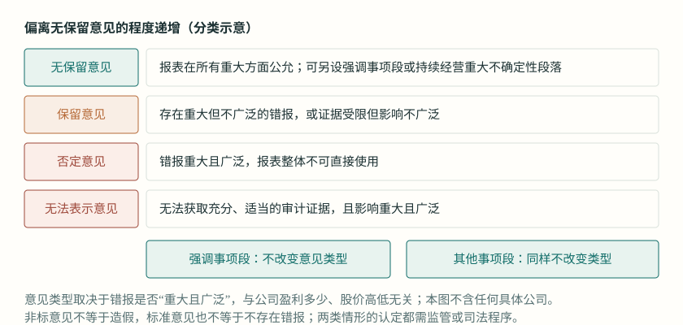
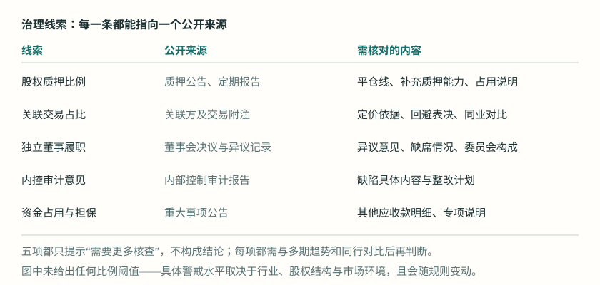

审计意见与公司治理
审计意见说明注册会计师对财务报表整体是否公允的结论，四类意见的含义与后果各不相同；关键审计事项则告诉你最难判断的地方在哪里。两者都不是对投资价值的判断。
审计意见能说明什么
审计意见是注册会计师对财务报表是否在所有重大方面按适用准则编制并公允反映的结论。它至少包含三层信息：结论类型（无保留、保留、否定、无法表示）、形成该结论的基础（含关键审计事项）、以及是否存在需要强调的事项或持续经营重大不确定性。
它不包含的是：公司值多少钱、管理层是否诚信、下一年的业绩如何。把“标准无保留意见”当作“公司没问题”的结论，是把审计的边界误当成担保。
两个实务要点：一是审计意见针对的是整体报表，不对单个科目给出“正确”的保证；二是审计意见类型与下一年度是否被出具非标准意见有关联，但没有必然关系，因此不能把“今年标准意见”当成永久的通行证。
四类意见与强调事项段
审计意见的基本类型是四类，另有不改变意见类型的段落。把它们按“偏离无保留意见的程度”排列如下：

| 意见类型 | 适用情形 | 分析上应做的事 |
|---|---|---|
| 无保留意见 | 报表整体公允；可另设强调事项段、其他事项段或持续经营重大不确定性段落 | 读关键审计事项与强调事项，看审计师关注什么；不要理解成“没有风险” |
| 保留意见 | 存在重大但不广泛的错报，或无法获取充分证据但影响不广泛 | 逐字阅读“形成保留意见的基础”，定位到具体科目与金额 |
| 否定意见 | 错报重大且广泛 | 报表整体不可直接使用，需重新评估所有依赖报表的分析 |
| 无法表示意见 | 无法获取充分、适当的审计证据，且影响重大且广泛 | 不把它当作“不确定”，而是当作数据不可验证的信号 |
强调事项段与其他事项段只是提醒使用者关注已在报表中恰当列报或披露的事项，不改变意见类型；涉及持续经营重大不确定性的段落则需单独看。意见类型会与监管及交易规则挂钩，具体指标与适用期间以交易所及监管机构现行规定为准，本页不列具体阈值。
关键审计事项怎么读
关键审计事项（Key Audit Matters）是审计师从与治理层沟通的事项中选出的、对本期审计最重要的事项，并需说明认定为关键事项的原因与采取的审计程序。它是“哪里最难审计”的公开提示，而不是问题清单。
- 看科目集中度：如果关键事项连续多年集中在同一科目（如收入确认、商誉减值），说明该科目对报表影响重大且判断空间大。
- 看应对程序：例如收入确认事项是否包含函证、抽样核对合同与验收单、期后回款测试。程序越具体，可验证性越高。
- 看年度变化：新增或更长时间持续的关键事项，值得与前期报告对比。
- 看与附注的对应：关键事项描述的判断基础应与报表附注中的会计政策、重大估计假设一致；若不一致，就是一个需要澄清的问题。
常见的关键审计事项类型包括：收入确认（尤其含总额法/净额法判断）、应收账款与合同资产减值、存货跌价、商誉减值、重大企业合并的对价分配、关联交易定价、诉讼与或有事项。
治理线索与内控审计
治理结构不直接体现在报表数字里，却会系统性影响数字的可信度。五项常见线索：

- 股权质押比例高：需关注平仓风险与是否存在占用。质押本身是融资行为，比例高不等于违规；关键看披露的平仓线、风险应对措施与占用专项说明。
- 关联交易占比高且定价特殊：需核对定价依据、是否回避表决、与市场价的差异及同业对比。
- 独立董事与审计委员会履职：看异议意见、是否缺席表决、委员会是否由会计专业人士担任召集人，以及审计报告签署前后的沟通披露。
- 内部控制审计意见：与财务报表审计分开，分为“有效”与“无效”（或带缺陷说明）。内控被认定无效时，需看具体缺陷与整改计划。
- 资金占用与违规担保：关注重大事项公告、其他应收款明细与专项说明；在报表上常表现为其他应收款异常增长。
提醒一点：这些线索与第 16 章的红旗信号一样，只能用于定优先级。比如高质押公司在行业下行时会面临更大的被动减持风险，但风险是否发生取决于股价、补充质押能力与股东自身资产，无法从质押比例单独推断。
审计师变更与审计费用
更换会计师事务所是公开披露事项，但原因需分开看：服务年限到期轮换、事务所合并或团队转入其他所、投标结果变化，都属于正常原因；带不同意见或无法完成审计而更换则需要更多关注。
- 变更时点：在年报披露前夕、或前期持续存在关键审计事项时更换，需看公司说明与前任事务所是否出具专项说明。
- 审计费用：费用与审计范围、子公司数量、业务复杂度相关。单纯“降费”不说明问题，但费用大幅下降而子公司数量增加、或与同行差异过大时，需问清审计投入是否充足。
- 连续非标意见：非标意见本身不会自动导致退市，退市指标与适用期间以交易所现行规定为准；分析上应关注导致非标的具体科目是否在下一期得到解决。
治理比率工作台
两个常见可比比率，数据为教学示意：质押比例 = 8,000 ÷ 10,000 = 80%；关联销售占比 = 1,200 ÷ 2,400 = 50%。两个比率都需与公告原文、附注及历史趋势一起看。
修改数据，即时复算
股数与金额单位各自保持一致；关联销售需使用同一期间的营业收入作分母。
核查清单与自测
把治理与审计信息整理成一张可以重复使用的核查表：
审计意见类型 + 形成基础段落（逐字读），区分强调事项段与持续经营不确定性段落。
关键审计事项的科目、认定原因与应对程序，与前期对比看是否新增或长期存在。
内部控制审计意见（有效/无效）与具体缺陷说明。
治理公告：股权质押、关联交易、重大担保、资金占用专项说明、董事与高管变动。
审计师变更公告、前任事务所专项说明与审计费用变化。
自测一：拿到“标准无保留意见”就可以不再看审计报告了吗？
不行。应继续读关键审计事项、强调事项段与持续经营相关段落，因为它们指向本期最难判断的地方；标准意见只说明报表整体公允。
自测二：被出具保留意见的公司，是否可以断定它存在造假？
不能。保留意见可能来自审计范围受限、也可能来自与公司就某项会计处理的分歧，需逐字阅读形成基础段落并核对具体金额与科目；是否构成造假需监管或司法程序认定。
结论：审计与治理信息的产出是“审计师认为最难判断的地方 + 治理层面需要额外核查的事项”，把它写成清单加入前面的异常分析，而不是单独用来下买卖结论。
依据与边界
本页所有公司描述与数字均为教学示意，不指向任何真实上市公司，也不构成投资建议。
审计意见分类与关键审计事项的要求以中国注册会计师协会发布的中国注册会计师审计准则（涉报表审计报告、非无保留意见、关键审计事项的第 1501、1502、1503 号等，以最新版本为准）为据；本页仅作概括，不代替准则原文。